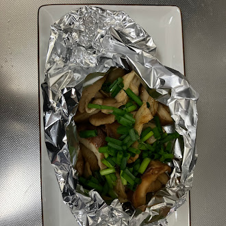

きのこ育成
育て始めたときはあまり成長するかという実感がありませんでした
ほんの少し成長しました。これからの成長が楽しみです
きのこの原型が見えてきました
きのこがたくさん生えました！
 きのこを使った料理はとても美味しかったです
.jpg) 育て始めたときはあまり成長するかという実感がありませんでした
育て始めたときはあまり成長するかという実感がありませんでした.jpg) ほんの少し成長しました。これからの成長が楽しみです
ほんの少し成長しました。これからの成長が楽しみです.jpg) きのこの原型が見えてきました
きのこの原型が見えてきました.jpg) きのこがたくさん生えました！
きのこがたくさん生えました！